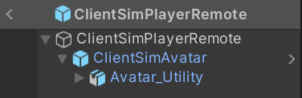
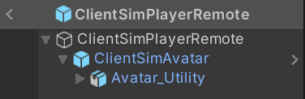

Player
The ClientSim representation of a player has been split into many components compared to CyanEmu. Each component handles a different aspect of the player. Below you can see the hierarchy of both the Local and Remote player prefabs.
 

ClientSimPlayer
The ClientSimPlayer class is the container that holds all the systems for the player. While both local and remote players have a ClientSimPlayer, it is only initialized for the local player. All systems for the remote player are left blank, other than the [Avatar}(#avatar) and VRCPlayerApi changeable data. The ClientSimPlayer is the first component on the top level object on the Player prefabs. In the inspector, you can view and modify VRCPlayerApi data such as Locomotion Settings and Audio Settings at runtime.
TrackingProvider
The TrackingProvider interface is a generic way to define how tracking data for the player should be controlled. The abstract TrackingProviderBase class provides data on the head, hands, and playspace position, and also determines the player’s current stance based on the head height. The tracking provider can be scaled to move the player camera up or down, helping test various player avatar scenarios. It will listen to PlayerHeightUpdate events and calculate a new tracking scale based on the requested player height. The default avatar height is 1.9, which represents TrackingScale 1. Since this class is abstract, it must be extended to be used in ClientSim. Currently only the DesktopTrackingProvider is included in ClientSim. Implementing VR in ClientSim would need a new VRTrackingProvider. The tracking provider is expected to be a child of the PlayerController, but will need to be reconsidered when implementing VR as playspace x/z offset is not applied to the player controller.
DesktopTrackingProvider
Currently the only implemented TrackingProvider for ClientSim. This tracking provider locks the hand positions relative to the camera. Camera height is modified based on Crouch and Prone Input Events. On every frame, this tracking provider checks for look input changes and updates the Camera’s x rotation (up/down). If the player is sitting in a station, then the head y rotation is unlocked to allow the player to look left and right, up to 90 degrees off the playspace rotation.
PlayerController
The PlayerController now only controls the movement of the player. In CyanEmu, the PlayerController class contained everything related to the player. Now these systems have been split off, making the PlayerController focused on simply handling the player’s movement. Every frame, the controller will check for movement input as well as TrackingProvider stance to know how much the player should move that frame.
PlayerStationManager
The PlayerStationManager manages how players interact with stations. It stores the current station the player is in, as well if the player is locked to the station. While locked to a station, at the end of the frame, for all Update, LateUpdate, and FixedUpdate methods, the PlayerController’s position is updated to the station’s. This happens at the end of the frame to ensure that any other script modifying the station’s position happens first.
InteractManager
The InteractManager is responsible for determining if a given GameObject can be interacted with and performing the interaction. It calculates the current distance the player can interact with using the TrackingProvider’s current TrackingScale and each Interact’s proximity value.
Raycaster
ClientSim interact detection is handled through the Raycasters. This system will search for Interactables based on a provided ray used in Physics.Raycast. The InteractiveLayerProvider is used to know what layers to consider when raycasting. All the hit objects are then filtered based on the components found. Objects with UIShape are always prioritized first. The InteractManager is used to determine the components on the object which can be interacted with. For each raycast, a RaycastResult is returned. This contains information about the ray, the object hit, and the type of interactable, if there is one.
RayProvider
The Raycaster uses a RayProvider to know what direction and origin to raycast. RayProviders are a generic way to supply the ray without knowing exact detail. ClientSim implements two RayProviders:
CameraRayProvider
Given a camera and the current mouse position, create a ray that goes through the mouse from the camera. This is the RayProvider used when TrackingProvider is set to not VR.
TransformRayProvider
Given a transform, create a Ray based on the position of the transform and the forward direction. This is used to raycast from the hands when the TrackingProvider is set to VR.
PlayerRaycaster
The PlayerRaycaster is responsible for searching the world for interacts and sending events based on what it finds. It will also update the PlayerHand system for both the left and right hands. When initialized, the PlayerRaycaster will create two Raycasters, one for the left and another for the right hand. If the TrackingProvider is not VR (is desktop), then the right hand uses a Raycaster with a mouse based RayProvider. The left hand is left uninitialized as it will never be used when not in VR. If the TrackingProvider is in VR, then the left and right Raycasters are initialized with a transform-based ray provider using the TrackingProvider’s hand transforms. Every frame, both hand Raycaster systems are updated to search for Interactables and the results are sent through the EventDispatcher. The last found interact is saved for each hand as the hovered interact. If a hovered interact is a Pickupable, that Pickupable is set as the hovered Pickupable for the given PlayerHand. If the Use Input action occurs for a given hand while hovering over an interact, then the hovered object will be interacted with.
PlayerHand
The PlayerHand system is responsible for managing Pickupable objects. The PlayerRaycaster will set the current hovered pickup. Then the PlayerHand will listen for the Grab Input Events on when to pickup the hovered Pickupable. PlayerHand will also listen to Use and Drop events to perform actions on the currently held pickup. If the pickup is kinematic, then the position of the pickup will be directly set every frame to match the PlayerHand’s rigidbody transform. If the pickup is non kinematic, it will be attached to the PlayerHand’s rigidbody using a fixed joint. When holding a pickup in the right hand, the pickup can be manipulated using the different Manipulate bindings.
PlayerAvatarManager
The PlayerAvatarManager manages items related to the player’s avatar. Both local and remote players have an Avatar Manager. The avatar for all players is the VRChat Default Robot. The manager is responsible for providing avatar information to the VRCPlayerApi. GetBonePosition and GetBoneRotation are implemented here as wrappers over Animator.GetBoneTransform. The local player’s avatar manager is the only one that is properly initialized, which allows it to listen to TrackingScale change Events, which then update the scale of the avatar to match the new tracking scale.
Reticle
The ClientSimReticle system is responsible for displaying a reticle icon in the center of Unity Game Window. This system should only be available for DesktopTrackingProvider. The reticle can be disabled through the settings menu. In addition to the center reticle, whenever the PlayerRaycaster hovers over an object with a UIShape, it will display a pointer over the mouse position. This pointer is not limited to the center of the screen and will still be displayed when the mouse is released. The location of the mouse is provided by ClientSimBaseInput.